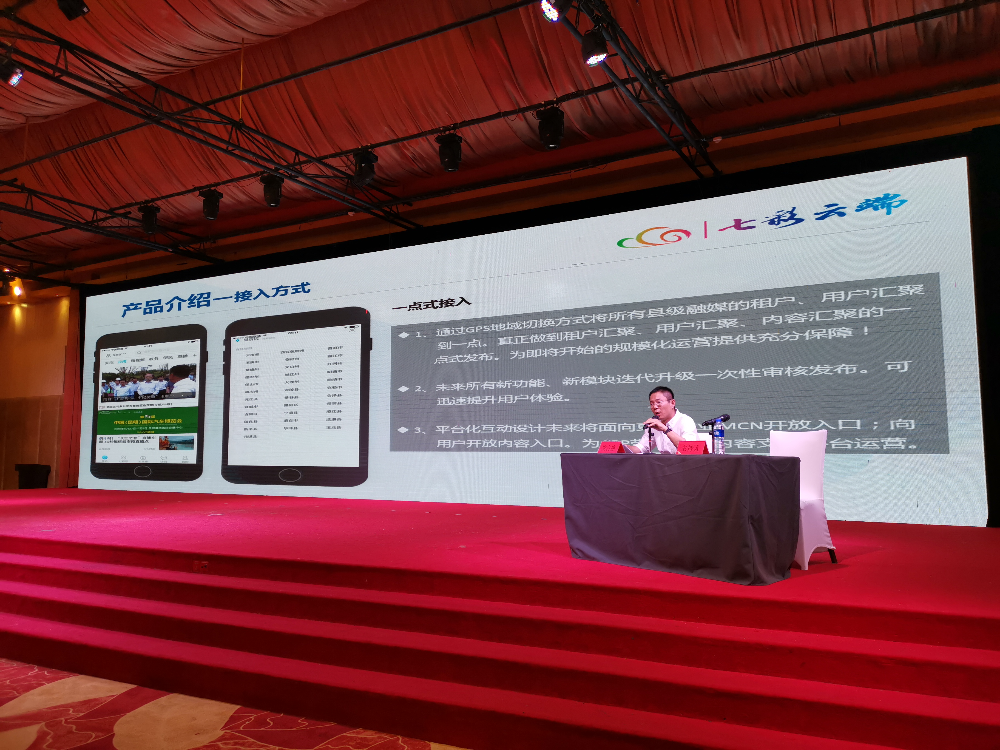
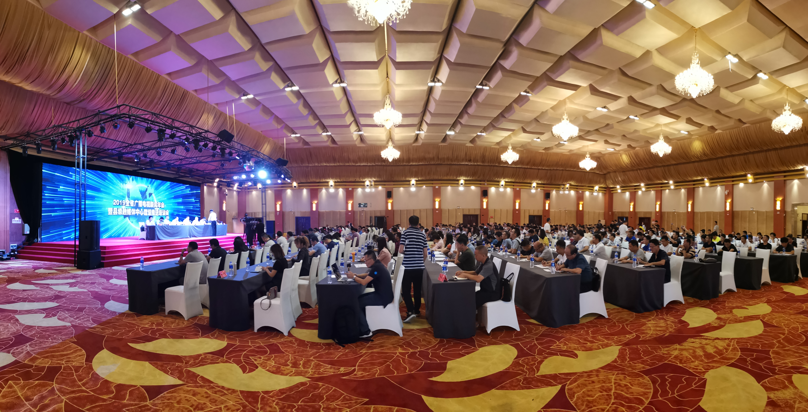

“做实、做熟、做专”ONAIR阳光云视助推云南省县级融媒体建设
7月4日，云南省广播电视新闻年会暨县级融媒体中心建设推进培训会在玉溪市召开，ONAIR阳光云视与来自云南省各个州市广播电视台及县（市、区）融媒体中心的负责人齐聚一堂。

会上，北京阳光云视科技有限公司西南大区总经理——胡英骏与来自云南各个州、市及县融媒体中心的负责人，一起走进“七彩云端”的融合之旅。

ONAIR阳光云视为云南广播电视台打造的“七彩云”平台提供了用户管理、生产加工、数据分析等一系列服务，助力云南台媒体融合创新业务的快速发展。
“七彩云端”是什么
七彩云端可以依托庞大用户群体，增大宣传力度，更好引导群众、服务群众；可以通过兴趣定向、地域定向等社交互动方式增加；不仅能通政务事务办理、信息发布窗口，通过移动互联网在线办理还可以通过广告变现、电商变现、周边产品、增值服务等方式实现盈利。
6月28日“七彩云端”进行了第二次的功能升级，为构筑县级“融媒体+大政务”的全程媒体、全息媒体、全员媒体、全效媒体的融合新模式，让各级媒体真正实现融合，构建政务覆盖、资源共享、信息互通、联动制作、全域分发的全媒体格局。
“七彩云端”实现五级联动

首先“七彩云端”通过GPS地域切换方式将所有县级融媒的租户、用户汇聚到一点。真正做到租户汇聚、用户汇聚、内容汇聚的一点式发布。为即将开始的规模化运营提供充分保障！
其次“七彩云端”栏目可以实现自定义，“七彩云端”的政务板块中将政务和便民版块进行区分，用户在功能模块使用中，模块用途清晰明了，通过七彩云端实现省、地州、区县、乡镇、村五级联动。进一步通过媒体融合打通了联系群众、引导群众、服务群众的“最后一公里”。
最后紧紧围绕“引导群众、服务群众”的目标，一方面积极加强与中央省州媒体的合作，筑牢平台基础，形成对外的广度融合，另一方面着力打通与全县各级各部门、各乡镇的服务渠道，形成对内的深度融合。同时，强化自身平台的建设和服务质量提升，以更加高效、便捷、优质的服务，为全县经济社会发展提供强有力的舆论支持和政务服务，构建全县一盘棋的大宣传格局。
会上云南台已开始对各县融媒体工作人员进行了“七彩云”融合媒体平台操作培训，力争让各县尽快上手开始使用。并以“七彩云端”APP为各县融媒体中心抓手，根据各县需求打造以七彩云平台为基础的定制化APP产品。

会议总结了云南广播电视台打造的融合媒体平台“七彩云端”推进县级融媒体中心建设的经验做法、理清思路，明确方向，为扎实推进县级融媒体中心建设奠定基础。
从1.0到如今的3.0，升级后的“七彩云端”APP从原来资讯发布变为资讯+政务+便民服务的综合性服务产品，现正积极与省级“一部手机游云南”“一部手机办事通”进行借口对接，完善和丰富产品内容。
ONAIR阳光云视致力于推动视频生产能力的变革，让视频应用更轻松！